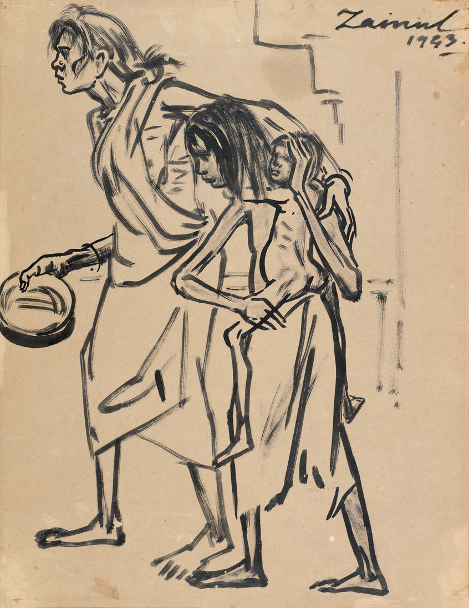
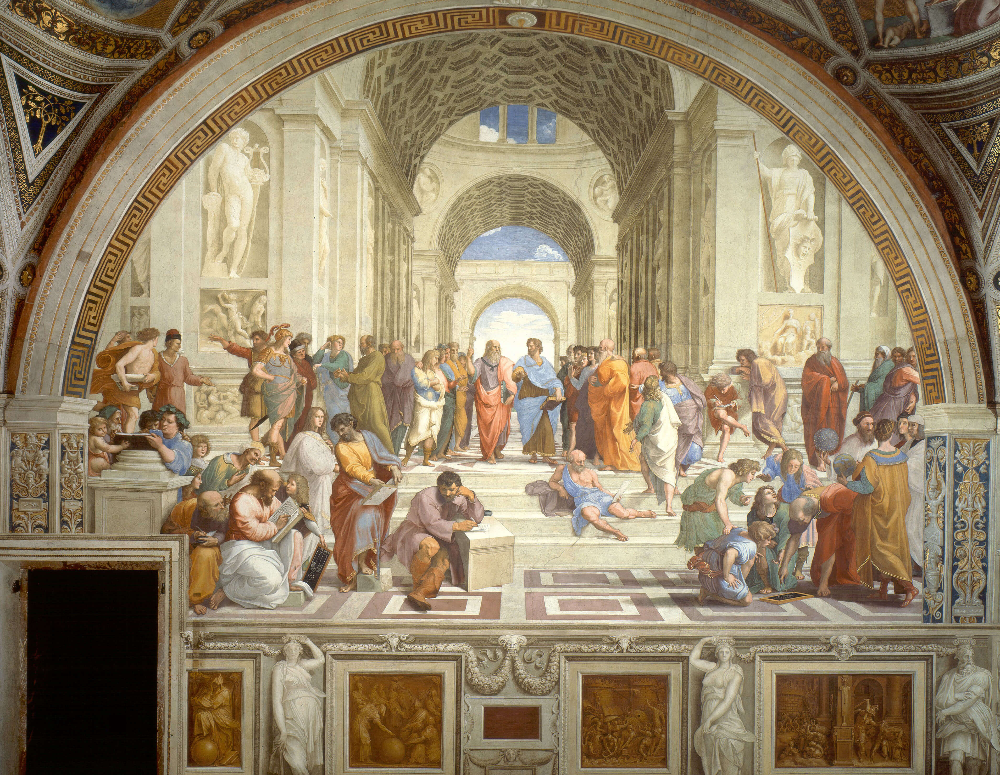

.png)
Nationalism and Art in India
 1906
1906
The leader of the Swadeshi movement in art was Abanindranath Tagore, who also led the Bengal school of Art. To oppose the partition of Bengal, Abanindranath painted the Banga Mata in 1906. He changed the name of the painting later to Bharat Mata. Bharat Mata personified a Bengali woman as a deity who was the mother of the nation. He painted her with four attributes that were seen as objects of nationalist goals. These were food, cloth, learning and spiritual knowledge.
Swadeshi Art represented subject matter that was inherently Indian and thus in turn inspired the Indians who viewed it. An example of such painting is The Passing of Shah Jahan by Abanindranath Tagore. The painting is prominent because it evoked the recent past of Indian history which was being seen to be glorious. The grandeur of the Mughal rule was also evoked and a homage to the Mughal miniature tradition was paid to, by Abanindranath in this painting.
1902
1665
The spirit of nationalist fervour was instilled in the disciples of Abanindranath as well. Nandalal Bose was one of his pupils who imbibed the spirit of swadeshi in his art. On the insistence of Gandhi, Bose painted a series of posters for the Congress Committee’s Haripura-meet. Nandalal used handmade paper to produce scenes from the lives of indigenous people. Along with his disciples, he created a series of paintings which invoked and celebrated the spirit of Indian life and indigenous occupations. These posters rejected western material / style and instead, used Japanese calligraphic strokes, natural colours and rural-life scenes. Nandalal’s involvement with the nationalist cause was not limited to a few works, he along with his students meticulously designed each and every page of the Constitution of the country upon independence.
Although, it was Abanindranath who is accredited for bringing nationalist fervour and expression to Indian Art but it was actually Raja Ravi Varma who first experimented with the revival of Indian heritage. His paintings of Hindu divinities, mythological scenes and Indian life were recreated in dozens in his printing press and were distributed in middle class homes all across the country in the form of posters and calendar art. His subject matter for painting was Indian but his technical style was academic realism. Ravi Varma was thoroughly criticised by the next generation of artists including Abanindranath Tagore.
 1665
1665
 1943
Zainul Abedin also trained under the Bengal school. He produced sketches of the horrific conditions during the Bengal famine of 1943 during which hit more than two million people. His sketches were a direct result of him being witness to the famine and capture the horrors that people had to face during this famine which was a result of the policies of the British government in India.
.png)
Renaissance
The Renaissance is a period in European history marking the transition from the Middle Ages to modernity and covering the 15th and 16th centuries, characterized by an effort to revive and surpass ideas and achievements of classical antiquity.
The word means spring in Italian. Primavera is a painting of Sandro Botticelli whose original name was Alessandro di Mariano Filipepi. The painting is also known as 'Allegory of Spring'. It is believed that Botticelli is created this piece of art around 1482 and is said to be one of the prime examples of Renaissance art. Many have attempted to interpret the painting and many have come up with explanations. Some say it is a mythical allegory while some say it is about the change of season into spring. This painting is popular because of the use of color and different explanations attached to it. Primavera is believed to be the most controversial painting in the world.
1482
 1665
1665
Created in 1512, this is one of the iconic paintings of Michelangelo. The creation of Adam is the painting on the ceiling of the Sistine Chapel. Even though this is one of the most replicated paintings of all time, it is only second in popularity to Mona Lisa. The painting has become a symbol of humanity as the image depicts the hand of both God and Adam on the verge of touching.
Considered to be the best artwork by Leonardo Da Vinci in 1498, the Last Supper is an important painting of the Renaissance period. The image shows Jesus with his disciples for his last supper. The painting is noted for its clever use of color, light, and anatomy. The painting is also a subject of many discussions and conjectures. Many have proposed that the disciple sitting to the right of Jesus is Mary Magdalene and many have also wondered the significance or meaning of the V shape between Jesus and the person on the right. Despite all the conjectures, the Last Supper is one of the masterpieces by Leonardo Da Vinci.
1498
 1511
Painted in 1511, it stands one among the four main frescos on the walls of Apostolic Palace in the Vatican. The four frescos symbolize Philosophy, Poetry, Theology, and Law. The painting symbolizes philosophy because it is said the painting is a representation of the finest period of Greek Philosophy as one can find Aristotle and Plato in the center of the painting. This painting has perfectly captured the classical spirit of the Renaissance .
Created in 1485, the painting shows Goddess Venus arriving on the island of Cyprus. She is depicted as a pure and mature woman standing on a seashell. Botticelli had given much attention to every detail of Venus. This painting was done in a period where nudity was a subject in paintings and thus makes this one an important painting of the Renaissance.
 1485
1485
.png)
French Revolution
The French Revolution was a period of radical political and societal change in France that began with the Estates General of 1789 and ended with the formation of the French Consulate in November 1799.
 1665
1665
1665
1665
1665
1665
1665
1665
1665